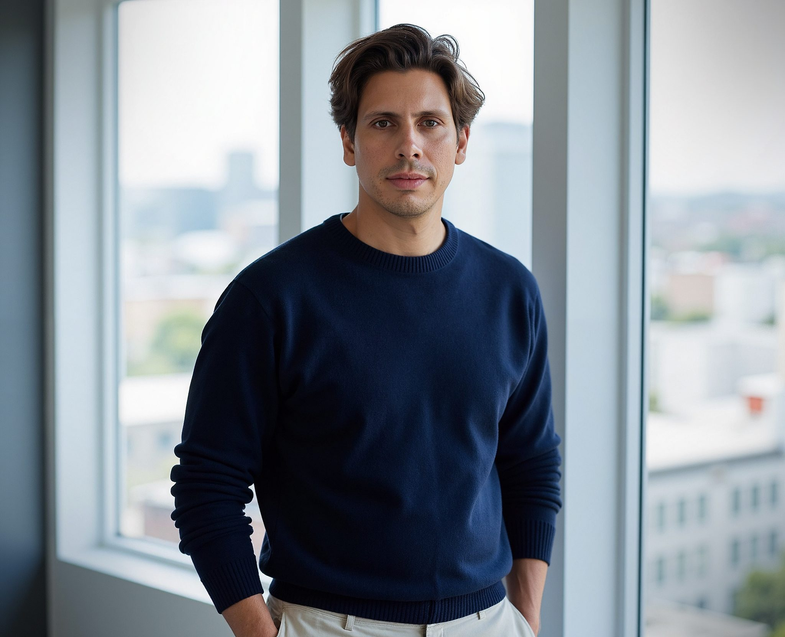

Profile
Architect & Project Developer
Around 15 years of experience in complex building projects with focus on residential, office and mixed-use assets.
Curriculum Vitae
A structured professional profile for applications, collaborations and selected leadership roles.

Profile
Around 15 years of experience in complex building projects with focus on residential, office and mixed-use assets.
Education
Architecture: Housing M.Sc., Hochschule Mainz. Dipl.-Ing. Architecture, Hochschule RheinMain. Real Estate Economics, EBS.
Software
ArchiCAD, AutoCAD, Revit, Rhino, SketchUp, Cinema 4D, V-Ray, Twinmotion, Adobe Creative Suite and BKI.
Languages
German and Croatian at native level; English for professional communication.
A timeline connecting architectural design, competition strategy, project development and private teaching.
Concept and design direction for competitions, acquisition and early-phase project development.
Independent architectural practice with focus on concept design, general planning, acquisition and residential/commercial projects.
Private lecturer for architectural design, with focus on public buildings and practice-oriented studio teaching.
Development management for residential and office projects, LPH 1-4, feasibility, calculations and coordination.
Project-leading architect, design and acquisition; later team lead for competitions and large-scale architectural concepts.